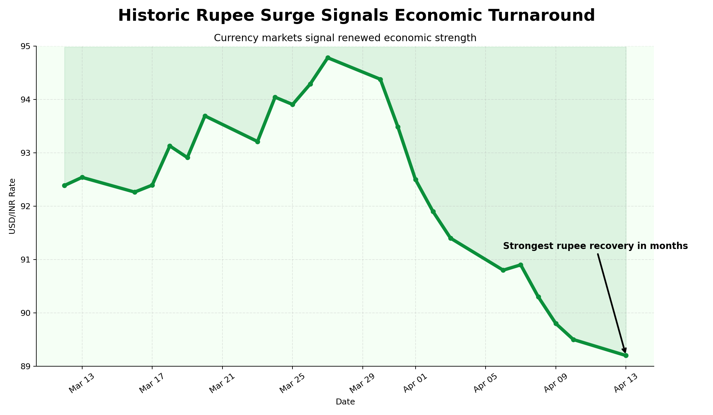
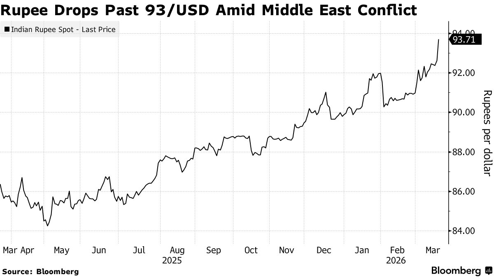

AI-generated propaganda-style chart using the modified dataset to exaggerate INR recovery.
Modified data exaggerates rupee strengthening.
The original dataset provides the true context.

Original Bloomberg chart may confuse viewers because upward movement visually implies improvement despite indicating rupee depreciation.
Ethical remake clarifies that a higher USD/INR means a weaker rupee.